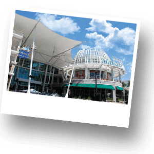
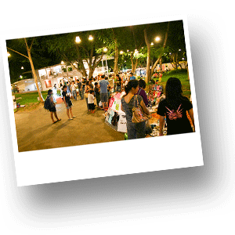
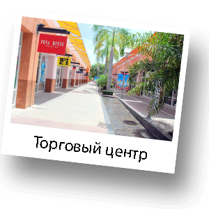

Шоппинг в Хуа Хине
Хуа Xин небольшой город и, конечно, Вы не найдете такого большого разнообразия шоппинг-моллов, как Бангкоке. Однако в Хуа Хине у Вас есть возможность в спокойной, присущей Королевскому курорту атмосфере, совершить необходимые покупки. В Хуа Хине имеется несколько мест, котоые можно посетить с целью совершения шоппинга. В зависимости от того, что Вам нужно, Вы можете для себя выбрать некоторые из нижепреведенных, а наиболее правильно - посетить все. Например, на обычном ночном рынке города можно купить очень качественные вещи за очень хорошую цену. В большом торговом центре Вы можете попасть на распродажу некоторых брендовых вещей и останетесь очень довольны покупками.

Market Village
Самый основной и большой торговый центр в Хуа Хине. Расположен практически в самом центре города на основной улице Печкасем роуд. В Market Village можно найти если не все, то очень многое. Здесь, главным образом, сосредоточились магазины известных брендов, такие, как Lee, Lacoste, Wrangler, Adidas, Camel и другие. Помимо известных марок, Вашему вниманию представлены «безымянные» вещи тайского производства, которые значительно дешевле, но при этом, достаточно качественные. На первом этаже расположен большой супермаркет Теско Лотус (Tesko Lotus). Там Вы найдете продукты питания, спиртное, овощи, фрукты, предметы личной гигиены, бытовую технику и многое другое. На втором этаже есть магазин товаров для дома HomePro. Также в Market Village Вы найдете фуд-корт, в которм представлены различные тайские кафе, рестораны азиатской и европейской кухни. На третьем этаже Вы найдете множество различной компьютерной техники, а также самые разнообразные модели мобильных телефонов. Также, на третьем этаже расположен кинотеатр и боулинг. Часть третьего этажа отдана детям. В этой части торгового комплекса Вашему вниманию представлен магазин детских товаров, магазин игрушек, а также, развлекательный комплекс для детей.
Главный ночной рынок Хуа Хина
Очень популярное место. Именно тут можно купить массу интересных вещей и сувениров тайского производства. Место интересно для шоппинга, для прогулки, а также можно посетить множество ресторанов с морепродуктами и национальными тайскими блюдами. Рынок популярен среди местных жителей и среди туристов. Рынок работает с 18.00-23.00 ежедневно.
Ночной рынок Гранд Маркет
Этот ночной рынок отличается особенно широким разнообразием товаров. Именно на рынке Гранд Маркет можно приобрести косметику, а буквально в соседней палатке щенка или котенка. Место рекомендуемое для посещения туристам. Очень хорошо заметен тайский колорит. На этом рынке Вы не встретите множество интересных ресторанов, но у Вас будет прекрасная возможность познакомиться с тайской уличной пищей. Вы увидите множество тележек с едой, которая готовится на месте. На самом деле, культура уличной еды с тележек (тележка с едой в Таиланде имеет название «макашница») не всегда понятна европейцу, но стоит заметить, что, как правило, еда вкусная, свежая и очень дешевая.
Villa Market
Этот магазин расположен на основной улице Хуа Хина - Печкасем роуд ближе к центру города. Villa Market – магазин европейских товаров. Очень большим спросом пользуется у европейцев, постоянно проживающих в Хуа Хине. В Villa Markete можно купить такие продукты питания, которые для Тайланда крайне не характерны. Например, сметана, брынза, грецкие орехи, гречневая крупа и многое другое. Также, здесь представлен очень большой выбор алкогольных напитков. В Таиланде ограничена продажа алкоголя по часам, но в Villa Market возможно приобрести спиртные напитки в любое время.
Macro
Огромный гипермаркет продуктов питания, бытовой химии и товаров для дома. В Macro многие товары можно приобретать только оптом. Магазин пользуется наибольшей популярностью у местных жителей и у постоянно проживающих в Хуа Хине иностранцев.
IndexMall
Гиганнтский магазин товаров для дома на выезде из Хуа Хина в сторону Бангкока. В IndexMall можно приобрести все – начиная от мебели и заканчивая посудой.
Power Buy
Самый крупный магазин электроники и бытовой техники в Хуа Хине. Расположен на главной улице Печкасем роуд в центре города.
Плавучие рынки
В Хуа Хине есть два плавучих рынка. Это не совсем традиционные плавучие рынки Юго-Восточной Азии. Они в большей степени имеют туристическую направленность, но очень интересны для посещения. На плавучих рынках можно купить уникальные ретро-сувениры. Территория плавучих рынков необычайно красива. Можно прогуляться и приятно провести время всей семьей. На одном из плавучих рынков ежечасно проходят традиционные тайские шоу. Также Вы сможете прокатиться вокруг рынка на ретро-паравозике и сделать очень красивые фотографии.

Cicada Market
Одно из самых популярный среди местных жителей и среди туристов место. Cicada Market открыт для посещения с пятницы по воскресенье вечером с 18.00 до 23.00. Здесь Вы можете погулять, отдохнуть и приятно провести время. Вашему вниманию представлены сувениры ручной работы, многие из которых изготавливают непосредственно в Вашем присутствии. Например, различные сувениры, бижутерия, футболки с вышивкой и аппликацией и сумочки, и игрушки, и интересные вещички для интерьера, маленькие, едва ли не микроскопические, фигурки животных в стеклянных колбочках. Также есть обувь и одежда, одежда для детей. Еще Вы можете сделать парафиновый слепок своей руки или руки своего ребенка! В дополнение там же Вы можете прогуляться по картинной галереи и посмотреть национальные тайские шоу. На Ciсada Market установлена сцена под открытым небом. Здесь проходят бесплатные концерты. Иногда выступают школьники, иногда детские творческие коллективы, а иногда играют очень хороший джаз. Если у Вас будет желание перекусить, на Ciсada Market большая площадка выделена под кафе и ресторанчики.

Cha-Am Outlet
Невероятно большой торговый центра открытого типа, где Вы сможете совершить покупки и приобрести подарки для родных и близких. На территории торгового центра представлена одежда, обувь, аксессуары, как для женщин, так и для мужчин. Также имеются магазины детской одежды.
Рыбный рынок
Рынок находится на территории рыбацкой деревни, которая расположена в южной части города Хуа Хин, у подножья горы Као Такиаб (Khao Takiap). Это место интересно тем, что именно эта рыбацкая деревня является основным местом, куда привозят свежевыловленные морепродукты и рыбу после ночной и ранней утренней рыбалки. Здесь же происходит сортировка и чистка, а далее морепродукты отправляются во многие городские рестораны и в отели. На территории рыбацкой деревни Вы можете погулять и купить свежую рыбу и разнообразные морепродукты. Можно купить как в свежем виде, так и попросить, чтобы для Вас все приготовили на месте по Вашему вкусу. Также на территории рыбацкой деревни есть несколько ресторанов, которые, возможно, весьма просты в своем интерьере, но там Вы почувствуете колорит страны и сможете попробовать очень качественные, а главное свежие продукты по умеренным ценам. Посещать рыбацкую деревню лучше всего в первой половине дня и в обед.
Фруктовый рынок
Большой рынок, где Вашему вниманию представлены разнообразные фрукты Таиланда. Рынок работает ежедневно с 16.00 до 20.00. Находится в южной части города по направлению к горе Као Такиаб, после пересечения эстакады с правой стороны.